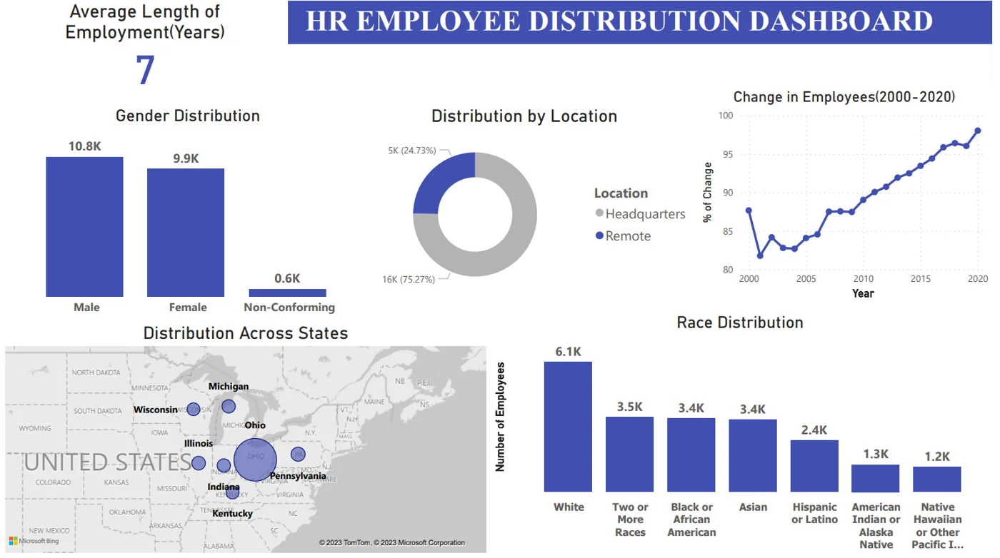

Explicit snapshot
Metrics use December 31, 2023. A termination after that date does not make a person inactive at the snapshot.
Make workforce reporting reproducible and interpretable.
An analytics project using 22,214 educational employee records. The browser dashboard exposes aggregate audit results and corrected metric definitions without publishing employee names or individual rows.
Headcount, exits and tenure can tell conflicting stories when reporting dates and denominators are unclear. This project separates point-in-time headcount, department termination share and calendar-year events.
Metrics use December 31, 2023. A termination after that date does not make a person inactive at the snapshot.
Exits are grouped by termination year. Tenure runs from hire date to exit or the snapshot date.
The audit reports age/date exclusions and reconciles in-scope active plus terminated records to the eligible population.
Age eligibility is evaluated at the reporting snapshot. Source provenance and license remain documented limitations.
Termination share is terminated records divided by records in scope. It is not annual turnover.
| Department | Records | Active | Terminated | Share | Mean tenure |
|---|
Events within the audit’s eligible snapshot cohort. The department filter above does not apply to this all-department table.
| Event year | Hires | Exits | Net flow |
|---|

MySQL transformations and a standard-library CSV audit make date issues and population rules visible.
Names and definitions distinguish cohort attrition from calendar flows and average headcount-based turnover.
Power BI source files complement this lightweight browser dashboard of aggregate evidence.
Educational dataset; no conclusions about a real employer or individual employee. This browser dashboard is an aggregate companion, not an embedded Power BI service.